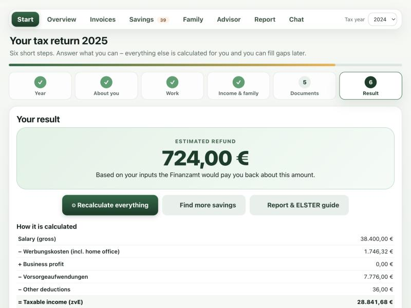
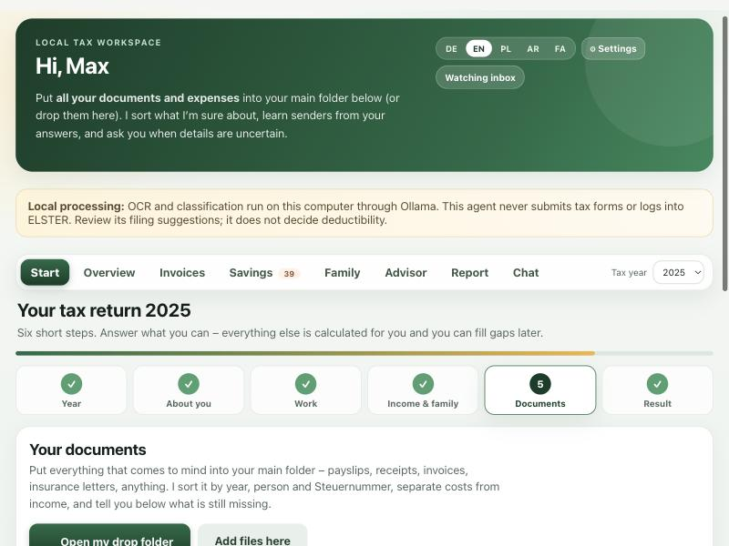
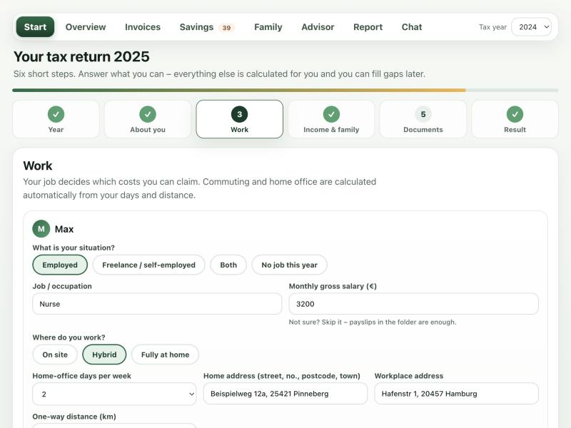
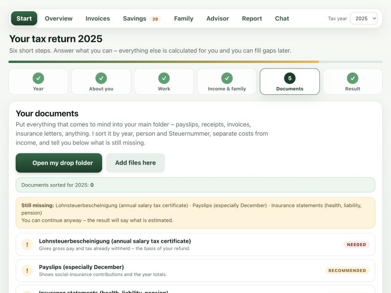

Answer a few simple questions, drop your documents into one folder, and get your estimated refund. No account, no upload, no ELSTER login.Beantworten Sie ein paar einfache Fragen, legen Sie Ihre Unterlagen in einen Ordner und erhalten Sie Ihre voraussichtliche Erstattung. Ohne Konto, ohne Upload, ohne ELSTER-Zugang.

Your documents never leave your computer.Ihre Unterlagen verlassen Ihren Computer nie.
Six short steps. No tax knowledge needed.Sechs kurze Schritte. Kein Steuerwissen nötig.
Flat rates, commute and home office are calculated for you.Pauschalen, Pendeln und Homeoffice werden berechnet.
Deutsch · English · Polski · العربية · فارسی
The assistant asks, you answer. Whatever you do not know can be added later.Der Assistent fragt, Sie antworten. Was Sie nicht wissen, ergänzen Sie später.
Choose which tax year to file – and see the deadline.Wählen Sie das Steuerjahr – inklusive Abgabefrist.
Drop a letter from your Finanzamt: names, Steuernummer and tax office are read automatically.Legen Sie einen Brief vom Finanzamt ab: Namen, Steuernummer und Finanzamt werden automatisch gelesen.
Job, on-site or home office, home and work address – the commute distance and days are calculated.Beruf, vor Ort oder Homeoffice, Wohn- und Arbeitsadresse – Entfernung und Tage werden berechnet.
Salary, freelance income, children, church tax.Gehalt, Selbständigkeit, Kinder, Kirchensteuer.
Put everything into one folder. It is sorted, costs and income are separated, and you see what is still missing.Alles in einen Ordner. Es wird sortiert, Kosten und Einnahmen getrennt, und Sie sehen, was noch fehlt.
Your estimated refund with a clear calculation, a printable report for your Steuerberater and an ELSTER guide.Ihre voraussichtliche Erstattung mit nachvollziehbarer Rechnung, ein Bericht für Ihren Steuerberater und eine ELSTER-Hilfe.
Screenshots with fictional demo data.Screenshots mit fiktiven Demo-Daten.



Free. Pick your system – no installer, no account.Kostenlos. Wählen Sie Ihr System – ohne Installer, ohne Konto.
xattr -dr com.apple.quarantine (with a space), drag the folder in, press Return.Terminal öffnen, xattr -dr com.apple.quarantine tippen (mit Leerzeichen), Ordner hineinziehen, Return.All files and older versions: Alle Dateien und ältere Versionen: Releases
The app runs only on your computer and listens on 127.0.0.1. Documents are read locally. There is no telemetry and no cloud upload. The only optional online feature is measuring your commute distance – and only after you tick a consent box.Die App läuft nur auf Ihrem Computer (127.0.0.1). Unterlagen werden lokal gelesen. Keine Telemetrie, kein Cloud-Upload. Einzige optionale Online-Funktion: die Messung der Pendelstrecke – nur nach Ihrer Einwilligung.
No. It never logs in to ELSTER and never stores a certificate. It prepares everything and guides you; you (or your Steuerberater) submit.Nein. Es meldet sich nie bei ELSTER an und speichert kein Zertifikat. Es bereitet alles vor und führt Sie; Sie (oder Ihr Steuerberater) reichen ein.
Many employees do – especially with commuting, home office and work costs above the flat rate – but it depends on your real situation and the tax already withheld. The app shows an honest estimate and what could still raise it.Viele Arbeitnehmer schon – besonders mit Pendeln, Homeoffice und Werbungskosten über der Pauschale –, es hängt aber von Ihrer tatsächlichen Situation und der bereits einbehaltenen Steuer ab. Die App zeigt eine ehrliche Schätzung und was sie noch erhöhen kann.
The estimate works for 2024, 2025 and 2026.Die Berechnung funktioniert für 2024, 2025 und 2026.